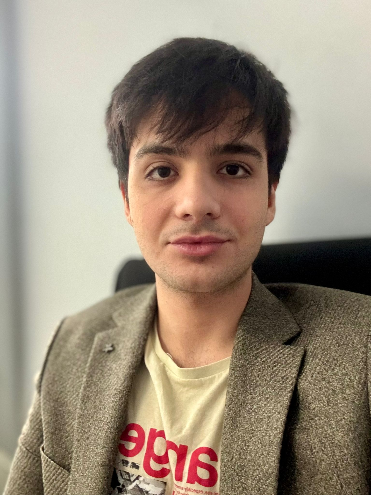

Mehmet Fatih INCIBAS

Summary
A passionate software developer and sports academician with a background in sports sciences, seamlessly combining expertise in sports management with a strong dedication to software development. Leveraging a foundation in research, analysis, and problem-solving, I have successfully transitioned into the tech field, rapidly developing proficiency in Full Stack Development. My unique blend of technical and academic skills enables me to approach challenges creatively and deliver innovative solutions in both sports and software domains.
Education
- Bachelor of Science, Sports Coaching Education - Cukurova University (2017-2023)
Work Experience
- Tennis Player - Atli Spor Tennis Academy
July 2016 - July 2018
- Competed professionally in local and regional tennis tournaments.
- Trained intensively to enhance technical and tactical skills.
- Collaborated with coaches and team members to achieve peak performance.
- Research Assistant - Istanbul Esenyurt University, Department of Sport Management
July 2023 - Present
- Assisted faculty members with research projects in sports management and related fields.
- Conducted literature reviews and data analysis for academic studies.
- Supported the preparation of presentations, reports, and publications.
- Coordinated departmental activities and student events.
Skills
- Frontend Development:⭐⭐⭐⭐⭐
- Backend Development:⭐⭐⭐⭐⭐
- Database Management:⭐⭐⭐⭐⭐
Awards and Certifications
- Certified Full Stack Developer
- Successfully completed the Cosmios Full Stack Development Course, gaining hands-on experience in frontend and backend technologies (2023).
Other